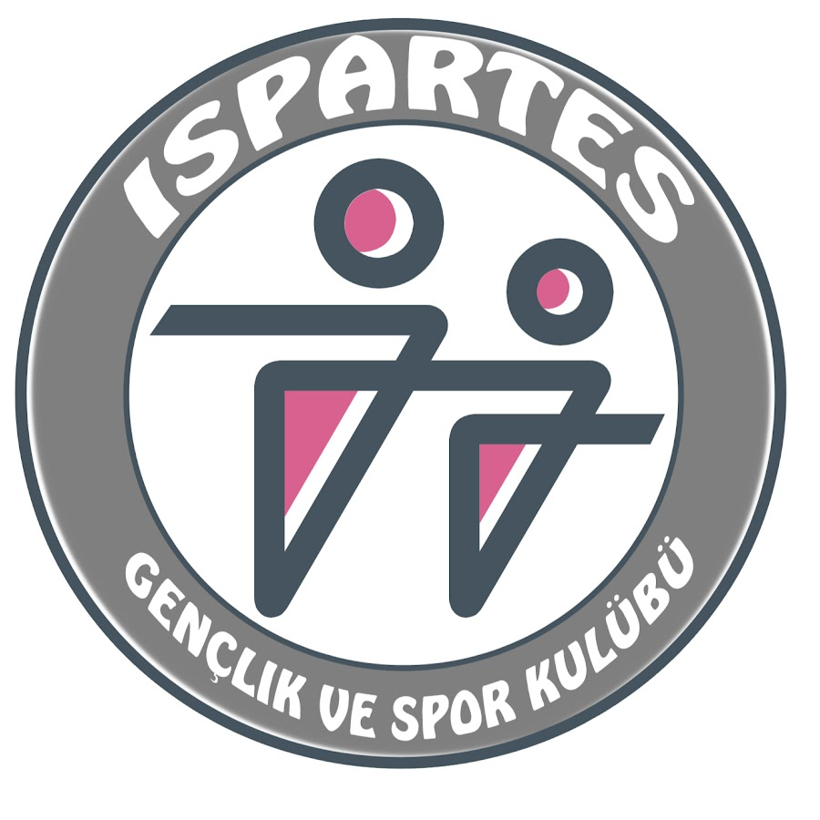

Isparta Masa Tenisi Kulübü

2016 yılında kurulan kulübümüz, pembe-gri renkleriyle disiplin ve tutkuyu temsil eder. Genç yetenekleri keşfedip dünya standartlarında sporcular yetiştiriyor.
Bizi Instagram'dan Takip Edin! Ispartes.ttc
🎥 Kulüp Videoları
🏆 Önemli Başarılar
5
Uluslararası Madalya
15+
Milli Sporcu
2017
İlk Türkiye Şampiyonluğu
2019
Avrupa Gençler Turnuvası 3.lüğü
2022
Süper Lig'e Yükseliş